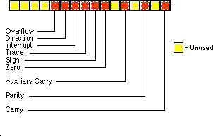

Cheatsheet
| click me | click me |
|---|
| EAX | Accumulator |
| EBX | Base |
| ECX | Counter |
| EDX | Data |
General Registers: specific values are expected when calling the kernel.
Pointer-Registers
| click me | click me |
|---|
| ESP | Stackpointer |
| EBP | Basepointer |
| EIP | Instructionpointer |
Index-Registers
| click me | click me |
|---|
| ESI | Source Index |
| EDI | Destination Index |
Segment- Registers
| click me | click me |
|---|
| ECS | Code-Segment |
| EDS | Data-Segment |
| ESS | Stack-Segment |
| EES | Extra-Segment |
Flags

NASM Basics
| click me | click me |
|---|
| -f | filesystem |
| -g | debugginfos |
| -o | output |
Compiling a Code
nasm -f elf32 -g -o filename.o filename.nasm
ld -o filename filename.o
in 64bit Architecture use -f elf64
Syscall-Numbers Linux
| click me | click me |
|---|
| EAX | Name(EBX, ECX, EDX) |
| 1 | exit( int) |
| 2 | fork( pointer) |
| 3 | read( uint, char*, int) |
| 4 | write( uint, char*, int) |
| 5 | open( char *, int, int) |
Linux Syscall Reference NASM Code-Sections
| click me | click me |
|---|
| .text | Code |
| .data | initialized Data |
| .bss | uninitialized Data |
Example
global _start
.data
msg db "Hello World",0xa
len equ $-msg
.text
_start:
mov eax, 0x4
mov ebx, 0x1
mov ecx, msg
mov edx, len
int 0x80
exit:
mov eax, 0x1
mov ebx, 0x1
int 0x80
Misc
| click me | click me |
|---|
| int Nr | call Interrup Nr |
| call label | jumps to label |
| ret | returns to call |
| nop | no operation |
| lea dest,src | load effective addr. to dest |
int 0x80 calls the Kernel in Linux
Logical Operations
| click me | click me |
|---|
| neg op | two-Complement |
| not op | invert each bit |
| and dest,source | dest= dest source |
| or dest,source | dest=dest source |
| xor dest, surce | dest = dest XOR source |
Control / Jumps (signed Int)
| click me | click me |
|---|
| cmp op1,op2 | Compare op1 with op2 |
| test op1,op2 | bitwise comparison |
| jmp dest | unconditional Jump |
| je dest | Jump if equal |
| jne dest | Jump if not equal |
| jz dest | Jump if zero |
| jnz dest | Jump if not zero |
| jg dest | Jump if greater |
| jge dest | Jump if greater or equal |
| jl dest | Jump if less |
| jle dest | Jump if less or equal |
For unsigned Integer use
ja, jae (above) or
jb, jbe (below)
Mnemonics Intel
| click me | click me |
|---|
| mov dest, source | Moves Data |
| add dest, value | Add value to dest |
| sub dest,value | Subtract value3 from dest* |
| inc dest | Increment dest |
| dec dest | Decrement dest |
| mul src | Multiply EAX and src |
| imul dest, source | dest = dest * source |
General Structure:
[label] mnemonic [operands] [;comment] Stack Operations
| click me | click me |
|---|
| push source | Insert Value onto the stack |
| pop dest | Remove value from stack |
Stack is a LIFO-Storage (Last In First Out)